Операторы поиска
Что такое оператор поиска?¶
Иногда мы тратим значительно больше времени на поиск, чем планировали. Это может быть вызвано множеством причин, начиная от недостаточной ясности в представлении пользователем того, что именно он ищет, и заканчивая сложностью языка и недопониманием запроса со стороны пользователя.
Для того чтобы проводить поиск информации более быстро и точно, мы можем воспользоваться так называемыми операторами поиска в Google. Это специальные команды, состоящие из набора символов, которые позволяют уточнять выборку результатов по нужным критериям.
Операторы могут использоваться как самостоятельно, так и в комбинации друг с другом. Таким образом, мы можем формулировать сложные запросы, которые обеспечивают более точные и релевантные результаты. Познакомившись с этими инструментами, мы открываем перед собой возможность значительно улучшить эффективность наших поисковых запросов.
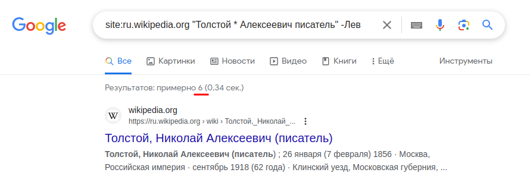
Основные операторы¶
Оператор исключения¶
Для того чтобы исключить определенное слово или термин из нашего запроса и предотвратить его связывание с результатами поиска, мы можем воспользоваться знаком минус -. Просто разместите его перед тем словом, которое вы желаете исключить.
Приведенный в примере запрос Толстой -Лев иллюстрирует применение этого метода. Здесь знак минус перед словом "Лев" указывает поисковому движку исключить результаты, содержащие это конкретное слово, что позволяет более точно настроить запрос и получить более релевантные результаты.
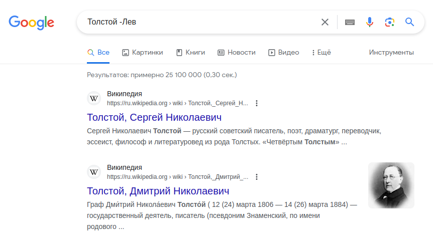
Оператор точного соответствия¶
Оператор точного соответствия предназначен для тщательного поиска и выделения слов или фраз, заключенных в кавычки "", которые обязательно должны присутствовать в результатах поиска. Этот оператор исключает использование синонимов, обеспечивая уверенность в том, что отображаемые результаты действительно соответствуют тому, что мы искали.
Приведенный пример, где указана фраза "Бедный Йорик! Я знал его, Горацио", является иллюстрацией использования оператора точного соответствия. В данном контексте поиск будет ориентирован исключительно на точное вхождение указанной фразы, и результаты будут содержать только те документы или тексты, в которых данная фраза представлена без изменений.
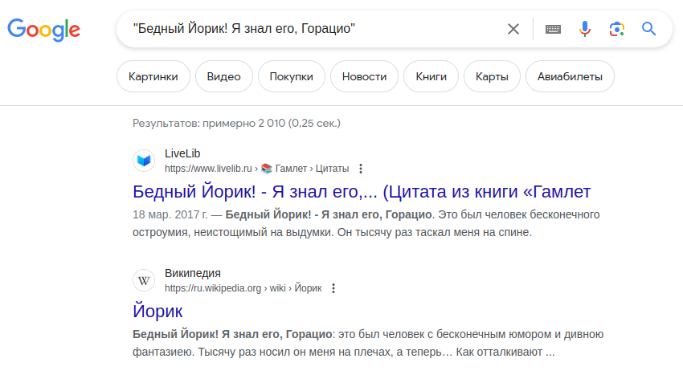
Оператор подстановки¶
Оператор подстановки, также известный как "звездочка" или "Wildcard", представляет собой особый символ * в поисковых запросах. Этот символ используется для замены нуля или более символов внутри слова или фразы. Оператор подстановки дает пользователям возможность проводить более гибкий и обширный поиск, учитывая различные варианты написания слов, а также неизвестные или произвольные части запроса.
Этот оператор становится особенно полезным в случаях, когда пользователь помнит только часть фразы и хочет найти её целиком. Например, запрос Казань брал, Астрахань брал * не брал может быть использован для поиска информации о том, какие города царь брал в фильме "Иван Васильевич меняет профессию". Оператор подстановки помогает учесть возможные варианты второй части фразы, что делает поиск более эффективным и удобным.
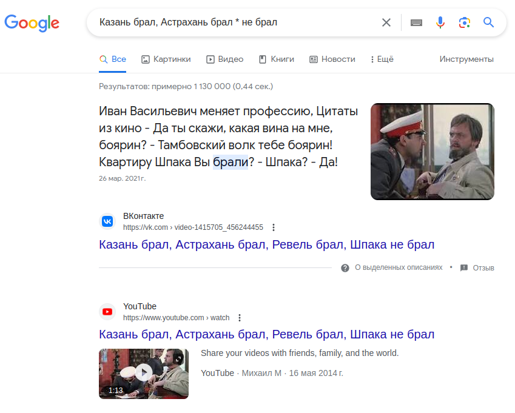
Оператор перечисления¶
Оператор перечисления .. в поисковых запросах предоставляет возможность указывать диапазон значений, что делает поиск более точным и ограниченным определенными параметрами. Этот оператор позволяет фокусироваться на результатах, соответствующих конкретным числам или временным интервалам. При использовании .. в поисковом запросе, система понимает, что необходимы результаты, находящиеся в пределах указанного диапазона.
Например, запрос Рок над Волгой 2009..2011 позволяет увидеть варианты результатов фестиваля "Рок над Волгой" за период с 2009 по 2011 год.
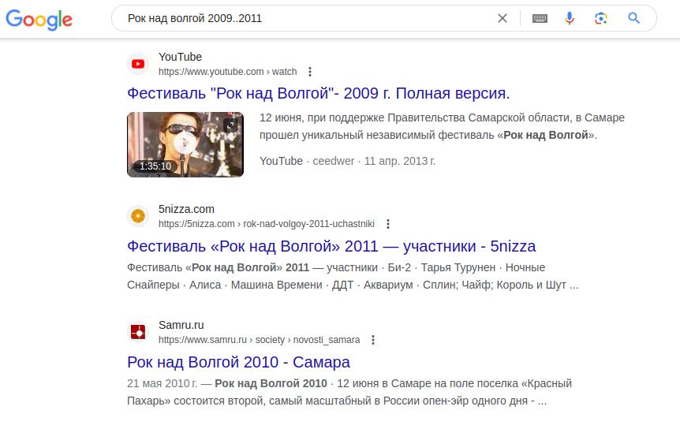
Расширенные операторы¶
Обрати внимание
Расширенные операторы в поисковых запросах следуют определенной структуре: <оператор>:<запрос>. Отличительной особенностью является то, что после двоеточия пробелы не допускаются, поскольку это может привести к неработоспособности оператора. Такая строгая структура обеспечивает корректное взаимодействие с поисковой системой и позволяет ей правильно интерпретировать запрос, основываясь на конкретных правилах, установленных оператором.
Примеры: site:ru.wikipedia.org , intitle:телефон , allinurl:tech news robots
site:¶
Оператор site: в поисковых запросах предоставляет возможность точно настраивать область поиска, ограничивая результаты только определенным веб-сайтом или доменом. При включении этого оператора в запрос, поисковая система фокусируется исключительно на поиске информации на указанном вами веб-ресурсе. Это особенно удобно, когда требуется найти конкретные данные на определенном веб-сайте или желание ограничить поиск информации до определенного источника.
Пример использования: site:https://www.igromania.ru/ "The Witcher 3". Этот запрос приведет к отображению результатов, связанных с игрой "The Witcher 3", но только с веб-сайта www.igromania.ru.
related:¶
Оператор related: в поисковых запросах является инструментом для выявления веб-сайтов, тесно связанных с указанным в запросе веб-сайтом. Путем ввода related: в запрос, вы получите перечень веб-ресурсов, которые поисковая система считает ассоциированными с указанным доменом. Этот оператор позволяет искать веб-сайты с аналогичным контентом и находить страницы, релевантные по тематике.
Использование команды related: также удобно для выявления конкурентов в выбранной области. Однако стоит отметить, что сложно предсказать конкретные результаты из-за алгоритмов, используемых поисковиком при подборе ассоциированных сайтов.
Пример использования: related:https://www.thewitcher.com/us/ru/witcher3 приведет к выдаче результатов, содержащих информацию об игре "The Witcher 3", на веб-сайтах, которые считаются связанными с указанным доменом.
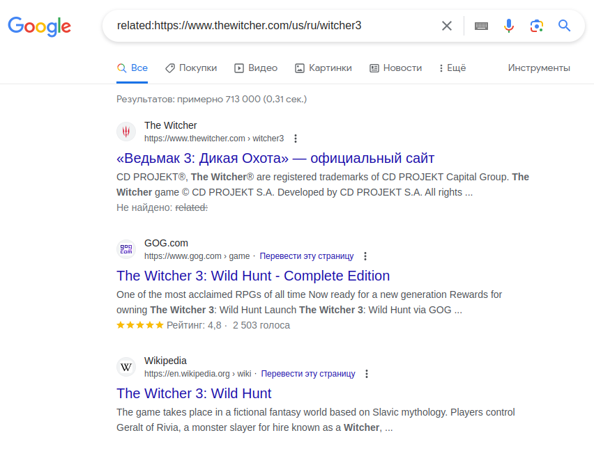
source:¶
Оператор source: выступает как эффективный инструмент в поиске новостей от конкретного источника. Он позволяет пользователю тщательно калибровать запрос и получение актуальной информации из специфических новостных источников. Этот оператор предоставляет уникальную возможность пользователям указать предпочтенные источники новостей, что в свою очередь обеспечивает возможность точной фильтрации результатов поиска.
Приведенный пример: ton source:habr.com иллюстрирует применение ограничения поиска новостей по криптовалюте TON только источниками с веб-сайта habr.com.
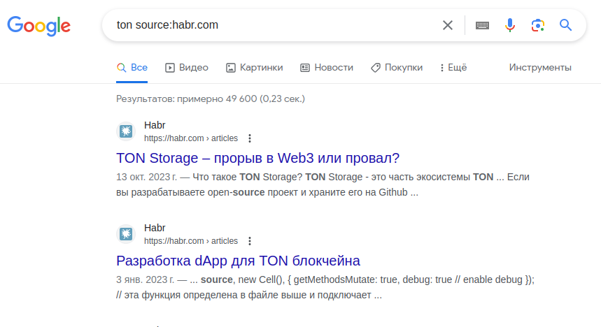
define:¶
Оператор define: в поисковых запросах предназначен для мгновенного получения точного определения или толкования определенного термина или слова. При использовании define:, поисковая система выдаст пользователю четкое определение из различных источников.
Пример использования: при запросе define:звук мы мгновенно увидим полное определение слова "звук".
Однако
следует отметить, что оператор может не всегда срабатывать.
Я считаю это связано с тем, что алгоритмы данного оператора могут быть несовершенными. Тем не менее, несмотря на возможные ограничения, идея использования оператора define: остается прекрасной.
В случаях когда оператор не срабатывает, быстрее найти значение через обычный ввод термина или слова в поле запроса, как например звук это.
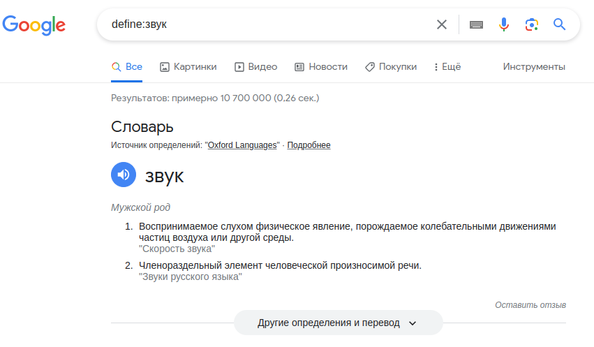
filetype:¶
Оператор filetype: в поисковых запросах представляет собой удобное средство для ограничения поисковых результатов файлами конкретного типа. Этот функциональный инструмент особенно полезен, когда требуется найти документы, файлы или ресурсы в определенном формате.
Интересно
Одним из ярких примеров эффективного использования данного оператора является поиск бесплатных книг.
В виртуальном пространстве можно обнаружить обширный ассортимент информации, причем многие книги доступны в формате PDF. Например, при вводе запроса "Лабиринт отражения" filetype:pdf, вероятность обнаружить полный вариант книги составляет около 90%.
Пример запроса кот из Шрека filetype:gif позволит найти анимированные картинки кота из мультфильма Шрек.
intext:¶
Оператор intext: в поисковых запросах является эффективным средством для ограничения результатов поиска страницами, где встречается конкретный указанный текст. Этот оператор становится особенно ценным, когда необходимо найти страницы, содержащие определенные ключевые слова или фразы в текстовом содержании.
Применение данного оператора позволяет более точно настраивать поиск и получать результаты, где указанный текст присутствует именно в содержании страницы, а не ограничивается заголовками или другими элементами.
Обрати внимание
Если требуется сделать запрос на несколько слов, следует использовать оператор allintitle: в котором разделение слов происходит через пробел.
Например intext:гармонь - запрос направлен на поиск страниц, содержащих фразу "гармонь".
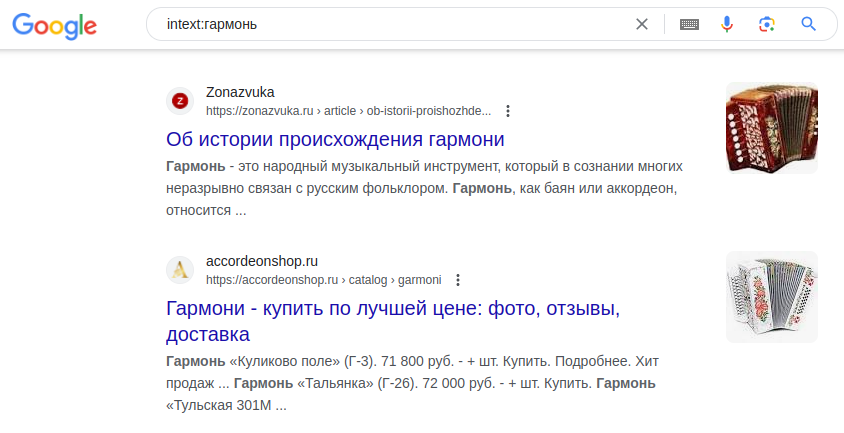
intitle:¶
Оператор intitle: схож с оператором intext:, только он ищет слово уже в заголовках.
Обрати внимание
Если требуется сделать запрос на несколько слов, следует использовать оператор allintitle: в котором разделение слов происходит через пробел.
Например intitle:индекс - запрос направлен на поиск страниц, содержащих фразу "индекс".
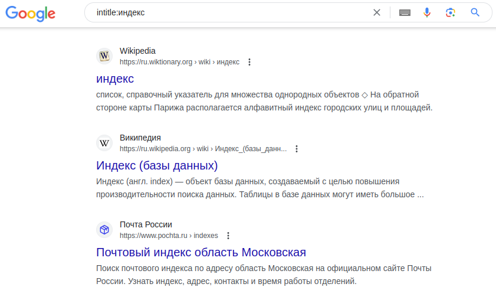
inurl:¶
Оператор inurl: аналогичен предыдущим операторам и используется для поиска определенного слова в URL-адресе.
Обрати внимание
Если требуется сделать запрос на несколько слов, следует использовать оператор allinurl: в котором разделение слов происходит через пробел.
Например inurl:стюардеса - запрос направлен на поиск страниц, содержащих в URL адресе слово "стюардеса".
Интересно
В приведенном примере с использованием слова "стюардесса" специально была допущена ошибка с целью разнообразить результаты.
Это подчеркивает важность экспериментирования с запросами в поисковых системах: иногда изменение запроса, введение ошибки или переход на другой язык может привести к совершенно другим результатам.
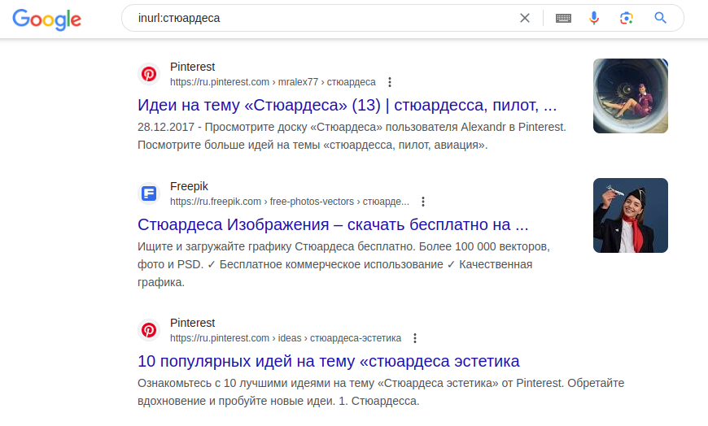
Операторы или стоп-слова¶
Для меня эти операторы не представляют собой роль обычных операторов; я выделил их как стоп-слова. Возможно, кому-то будет удобно использовать их как операторы. Но в каждом операторе я собираюсь подчеркнуть, как они активно применяются в повседневных поисковых запросах на русском языке, чего мы, возможно, не замечаем.
map:¶
Оператор map: в Google предназначен для точного и эффективного поиска местоположений на картах Google Maps. Для использования оператора необходимо место и возможно дополнительные параметры.
Ежедневно, при запросах, на русском языке мы его используем как карты или карта. Использование и эффект такой же. Мы указываем стоп-слово и пишем расположение, нам выдаются результаты локации на Google Maps.
Например: map:Москва улица Гагарина , альтернатива : карта Москва улица Гагарина
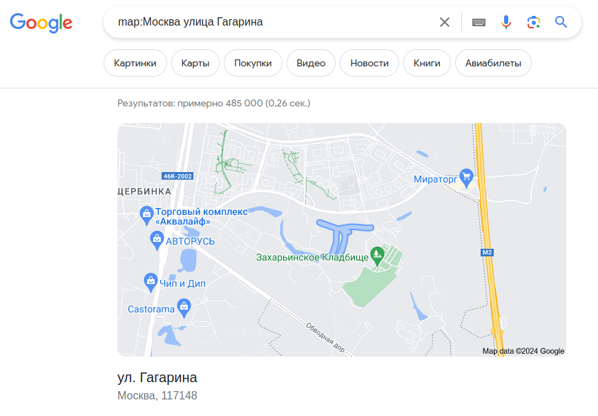
weather:¶
Оператор weather: используется для получения прогноза погоды от доверенного источника. Для использования оператора необходимо указать оператор или стоп-слово, далее прописать местоположение.
Например: weather:Москва , альтернатива: погода Москва
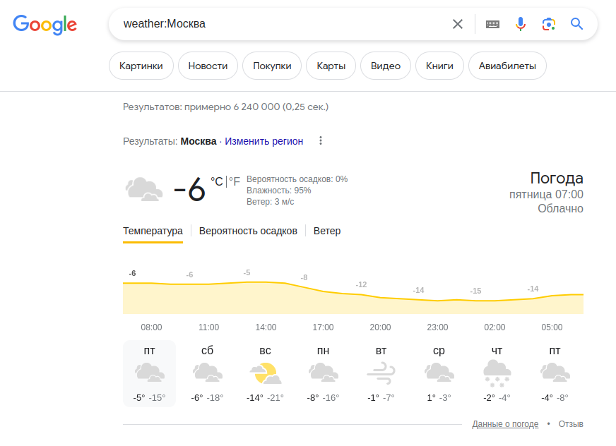
movie:¶
Оператор movie: помогает найти информацию о фильме, а также может показать расписание сеансов, если в данный момент недалеко от вас, показывают этот фильм.
Например: movie:Человек-муравей Квантомания , альтернатива: фильм Человек-муравей Квантомания
stocks:¶
Оператор stocks: используется для получения интересующего курса валюты или акций, а также конвертация в заданную валюту.
Например: stocks:Евро , альтернатива: курс Евро
Обрати внимание
Оператор stocks: работает не всегда.
Пока не удалось выяснить причины, по которым оператор не работает. Возможно он бесполезный. В данный момент, я не нашел способа его использования, только его альтернативу: курс.
Также, следует заметить, что курс акций он перестал показывать, причины также неизвестны.
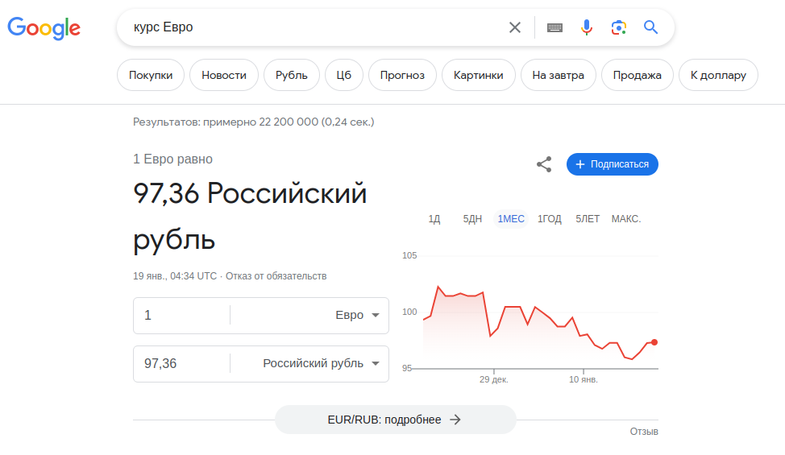
in, to¶
in и to это уже настоящие стоп-слова. Они не используют структуру расширенных операторов, они больше похожи на основные. Данные стоп-слова служат для конвертации длин, массы, валют и т.п.
Например: 100 см in мм , альтернатива, которую используют чаще всего: 100 см в мм
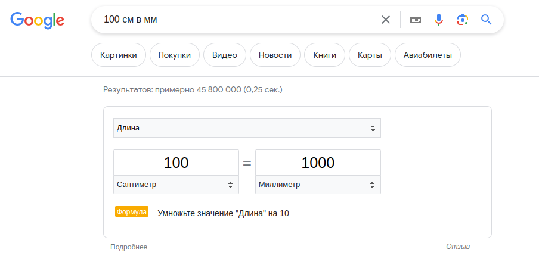
Знак валюты¶
Знак валюты в запросе также является стоп-словом. Он даёт понять поисковой системе в какой валюте следует находить результаты. Многие пишут, что данный оператор служит поиском товаров в указанной валюте. В моей практике, больших заслуг он не получил, он лишь заменяет длинные названия валюты и 99% это знак доллара. Воспринимайте его как обычный символ для запроса.
Примером может стать: 100$ в рублях
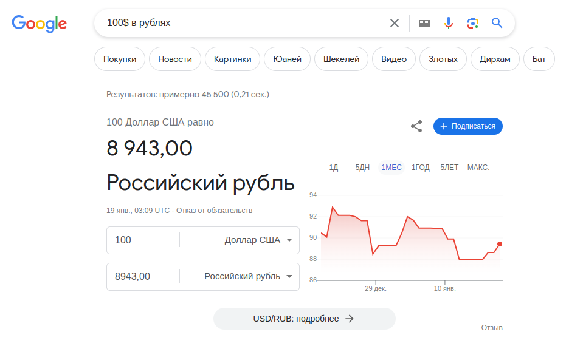
Специфичные операторы¶
Специфичные операторы не представляют собой обыденные инструменты для среднестатистического человека. Они служат инструментами для различных специалистов. Знание этих операторов не является обязательным, и с высокой вероятностью они вам не пригодятся.
cache:¶
Оператор cache:, отображает последнюю кэшированную версию веб-страницы если страница проиндексирована.
Например: cache:https://pikabu.ru/communities
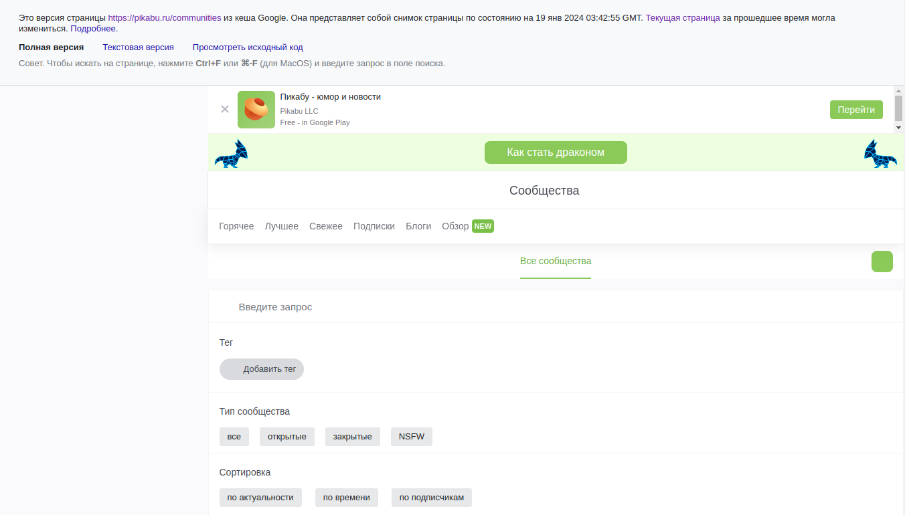
inanchor:¶
Оператор inanchor: в поиске Google используется для нахождения веб-страниц, содержащих в своих якорных текстах (ссылочных текстах) определенное слово или фразу. Якорный текст — это текст, который является ссылкой, и находится между открывающим и закрывающим тегами <a> в HTML.
Обрати внимание
Если требуется сделать запрос на несколько слов, следует использовать оператор allinanchor: в котором разделение слов происходит через пробел.
Пример использования оператора: inanchor:технологии
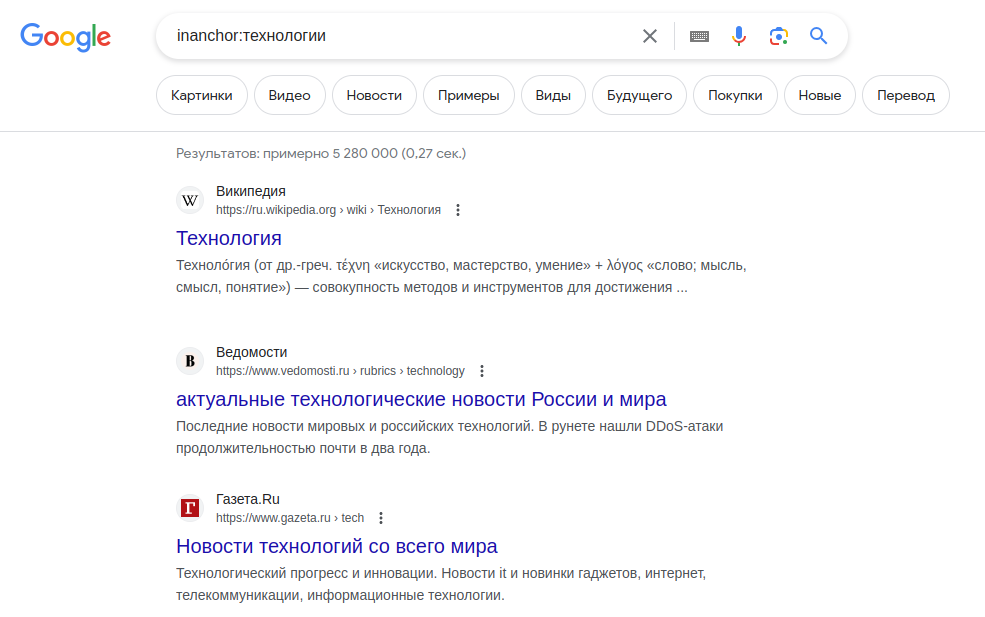
Бесполезные операторы¶
Эта группа включает в себя те операторы, которые, за мой многолетний опыт использования поисковой системы, так и не оправдали своего применения. Также, сюда относятся операторы, которые, к сожалению, не функционируют.
AND, OR¶
Оператор AND используется для указания, что оба термина должны присутствовать в результатах поиска. На практике он может показаться излишним, поскольку стандартный запрос без оператора AND также возвращает результаты, в которых оба термина встречаются.
Оператор OR позволяет указать, что один из терминов должен присутствовать в результатах поиска. Однако, как и в случае с оператором AND, стандартный запрос без оператора OR также возвращает результаты, где хотя бы один из терминов встречается.
Обрати внимание
Я пытался, для данного руководства, найти в них пользу.
Одним из способов сделать операторы AND и OR более полезными является их сочетание с группировкой через скобки.
Например: (исследование OR CSS) AND "новые технологии" Этот запрос должен вернуть результаты, где присутствует либо "исследование" либо "CSS", и при этом обязательно должен быть также термин "новые технологии".
Но на практике данный вариант очень не удобный, а также результаты совершенно непредсказуемые. Мне кажется лучшим вариантом будет отказаться от использования подобных операторов.
loc:¶
Оператор loc: , предназначенный для определения результатов поиска из заданного местоположения, оказался малопригодным в использовании. Лично для меня он кажется лишним элементом, который не улучшает, а даже усложняет наше взаимодействие с поиском.
Рассмотрим пример: Американские горки loc:Самара - этот запрос выдаст результаты об американских горках в Самаре. Однако на практике мы можем обойтись без оператора loc: и написать простой запрос: Американские горки Самара, и результаты будут аналогичными.
Даже тот факт, что с ним запросов куда меньше, может только затруднить выборку результатов. Если нам требуется найти расположение аттракциона, следует воспользоваться картами, а не локацией. В итоге, я не рекомендую его использовать.
blogurl:¶
Этот оператор предназначен для выполнения поиска URL блога в заданном домене. Однако его функциональность не ясна. Я испытал затруднения в понимании его смысла.
AROUND(X)¶
Поиск в близком контексте предполагает наличие двух слов или фраз на определенном расстоянии друг от друга в тексте.
Пример использования: samsung AROUND(3) новый. В данном случае, слова samsung и новый должны встречаться не далее чем в трех словах друг от друга. Однако, на практике результаты этого оператора оказываются непредсказуемыми. В итоге, его использование не рекомендуется.